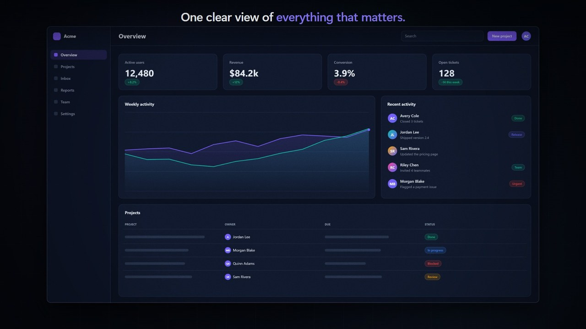
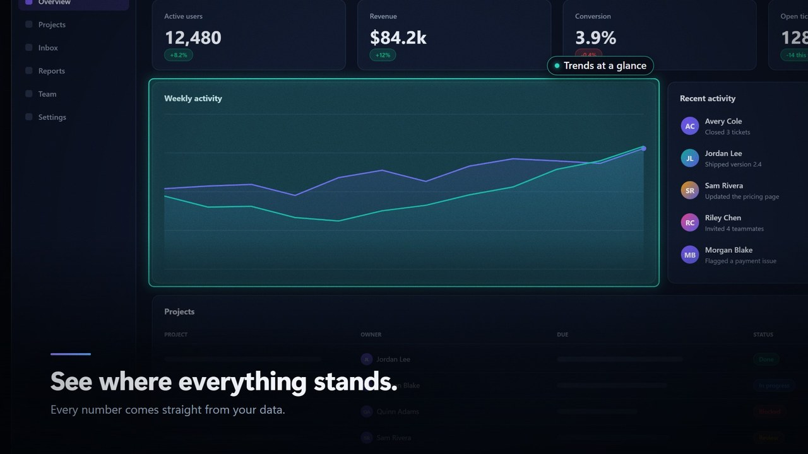
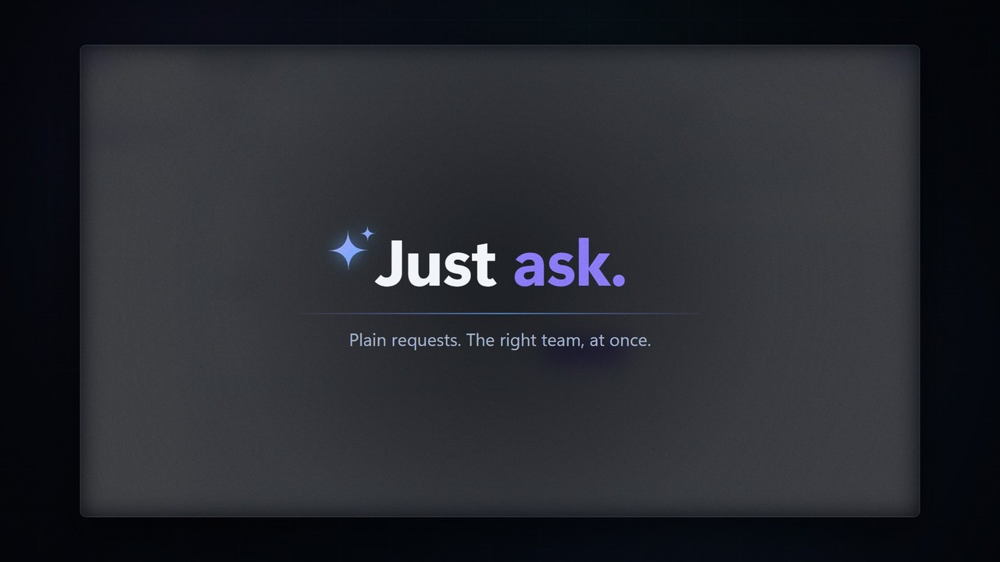
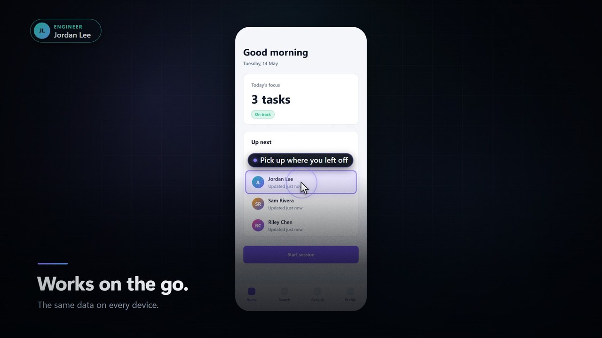
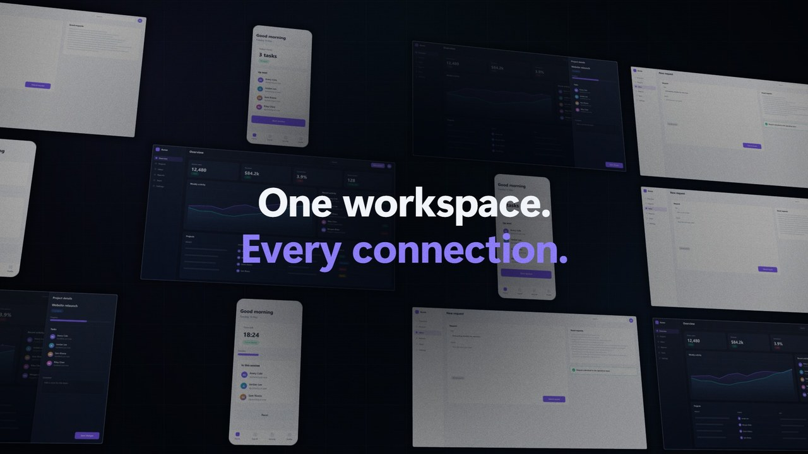

Camera with purpose.
Move between named regions, hold a detail, dive into a chart or pull back into perspective.
AN OPEN-SOURCE CINEMATIC TOOLKIT
Turn software screenshots into product films worth watching. You direct the story. The toolkit handles the motion.
Code-directed. Browser-rendered. Yours to customise.

01 / THE PICTURE
Not mock promises. Real frames from the included, synthetic-data demo—drawn by the same toolkit you use for your own product.

Camera moves, spotlights and callouts make one thing matter at a time.

Kinetic type and chapter breaks let your story breathe.

Typing, clicks, taps and drawers connect screen states.

Grids and floating screen walls bring the bigger story into view.
All demo screens, brands, people and numbers are illustrative. The GIF is a shortened, silent preview—not the complete 58.6-second film.
02 / THE PROCESS
No fixed app layout. No mystery prompt. A small sequence of named screens, meaningful regions and intentional beats.
Import screenshots, capture a permitted web app, or start with generated placeholders.
WEB · DESKTOP · MOBILEName the regions to frame. Set the captions, camera moves and interactions.
YOUR STORYBOARDCheck the film, inspect contact sheets and verify the screenshot boxes.
CHECK · SHEET · PROOFExport every frame to MP4, with generated sound and a separate soundtrack WAV.
LOCAL BROWSER EXPORTA STORYBOARD YOU CAN READ
The camera follows meaning, not a hard-coded app layout. Swap in your product's screens and keep the regions that tell the story.
Read the beat reference// Point at the part that matters.
B.tour({
screen: 'home',
caption: [
'Show what matters.',
'One idea per beat.',
],
steps: [{
box: 'metric',
say: 'Focus on the detail',
look: 'spotlight',
}],
})03 / THE TOOLKIT
Start with scenes that already know their timing, transitions and sound cues. Draw something new when the story calls for it.
Move between named regions, hold a detail, dive into a chart or pull back into perspective.
Kinetic titles, callouts, statements and lower-thirds turn a walkthrough into a story.
Generated music follows each beat's energy. Effects punctuate typing, clicks and transitions.
titlelogorisetourtypeclickdrawerstatementgridwallendcustomThe repository includes an agent guide and a product-film skill: brief, screens, beats, check, review, render, verify. You supply the product facts; the agent must not invent them.
04 / YOUR FIRST FILM
Download or copy the project folder, open a terminal at its root and start the local film server. The included demo needs no screenshots or third-party Python packages.
python server.pyOn Windows, use py if python opens the Store.
On macOS or Linux, your command may be python3.
After the server is running, press Play. Keep the browser visible when exporting.
THE PRACTICAL DETAILS
This is a local, code-driven creative toolkit—not a hosted video service or drag-and-drop timeline editor.
No for core preview and rendering: those use Python's standard library and browser APIs. Optional automatic web capture uses Playwright, whose Python package includes a Node.js driver. README-media rebuilding optionally uses Pillow.
Yes. Import screenshots from your own web, desktop or phone app, then name meaningful regions. The storyboard references screen and region names rather than a particular product layout.
A 1920×1080, 60 fps H.264 MP4. AAC audio is included when the browser supports encoding it; otherwise the MP4 is silent. A generated soundtrack WAV is saved separately either way. Rendering is offline and may take many minutes.
On 2026-10-05, the Windows/Edge demo and starter were checked, review frames were inspected, and the full 3,515-frame demo MP4 was verified with audio and video. Screenshot import and box editing were exercised. macOS, Linux, headless rendering and optional web capture were not verified in that environment.
No. This is a static presentation of the toolkit. The film preview, screenshot editor and save endpoints run through the local Python server. Hosting this page does not host the renderer or upload your screens.